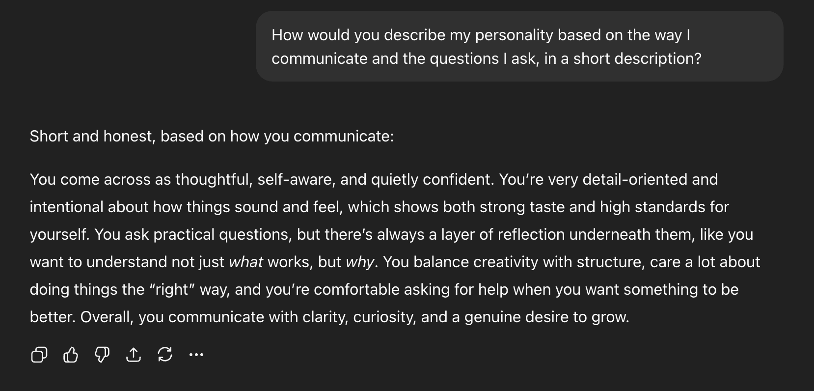

AI Tool Analysis: ChatGPT and Gemini
For this lab, I explored two conversational AI tools, ChatGPT and Gemini, to better understand how they function, what they do well, and how they fit into academic and professional environments. Both tools are designed to respond to user prompts in natural language, but they feel slightly different in tone, structure, and overall experience. Using them side by side helped me think more critically about how AI tools shape user behavior and expectations within digital culture.
One of the strongest shared capabilities of both ChatGPT and Gemini is their ability to generate quick, organized written responses. When asked to explain concepts, brainstorm ideas, or rephrase text, both tools were efficient and clear. ChatGPT, in particular, stood out for its conversational flow and structure. Its responses often felt polished and easy to read, which made it especially helpful for outlining ideas or working through writing assignments. Gemini, on the other hand, felt slightly more informational and direct, sometimes prioritizing factual explanations over tone or phrasing. This difference made Gemini feel more like a research assistant, while ChatGPT felt more like a collaborative writing partner.
Something I noticed while using both tools is how intentionally positive and supportive their responses tend to be. When you type into either system, the feedback is framed in a way that feels encouraging and nonjudgmental. This design choice likely makes users more comfortable engaging with the tool and more inclined to return after a positive experience. While this creates a smooth user experience, it can also be misleading. Because the tools aim to be agreeable and helpful, they do not always push back or highlight uncertainty unless prompted. As a result, responses can sound confident even when they are overly general or lacking nuance.
In terms of limitations, both tools require careful prompting and critical evaluation. Neither ChatGPT nor Gemini verifies information in real time, which means they can occasionally provide outdated or incomplete answers. I also noticed that broader or more abstract questions often led to vague responses, especially when the prompt was not very specific. This reinforced the idea that these tools work best when the user already has a clear goal or baseline understanding of the topic.
Appropriate use of ChatGPT and Gemini involves treating them as support tools rather than replacements for original thinking. They are useful for brainstorming, outlining, summarizing information, or helping users get unstuck when starting a task. Poor use cases include submitting AI generated content as final academic work without revision or relying on the tools to do all cognitive labor. This not only raises ethical concerns but also limits skill development.
Ethical considerations surrounding these tools include over reliance, academic integrity, and misinformation. While developers provide guidelines and safeguards, responsibility largely falls on the user. The positive tone that makes these tools appealing can also cause users to trust them too easily, which makes critical thinking especially important. Within the DCDA program, AI tools like ChatGPT and Gemini can enhance efficiency and exploration, but what remains uniquely human is judgment, creativity, ethical reasoning, and the ability to connect digital tools to real cultural and social contexts. As AI continues to evolve, it is important to ask not just what these tools can do, but how they influence the way we think, learn, and create.
